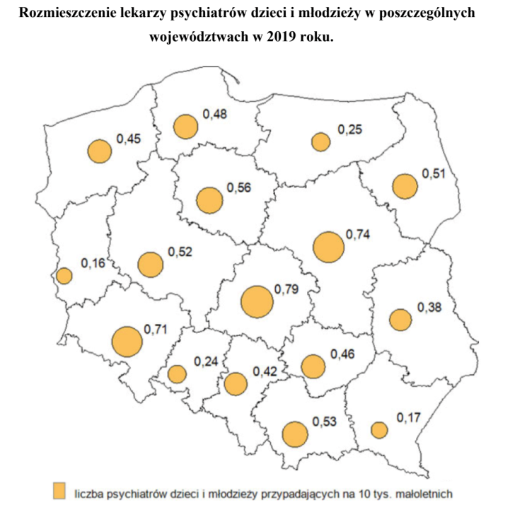
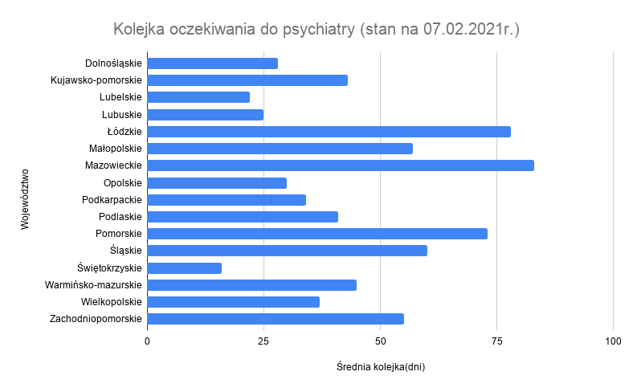
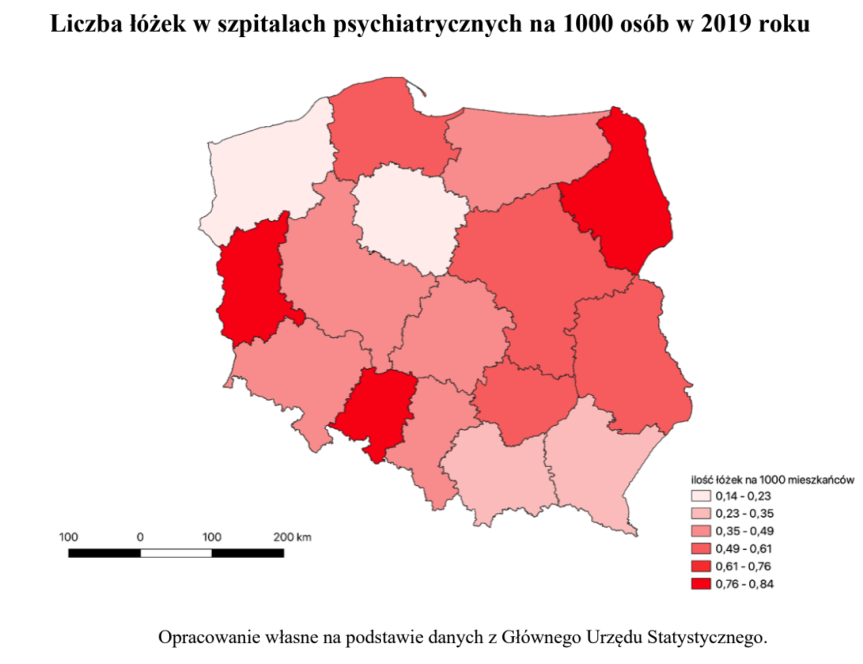
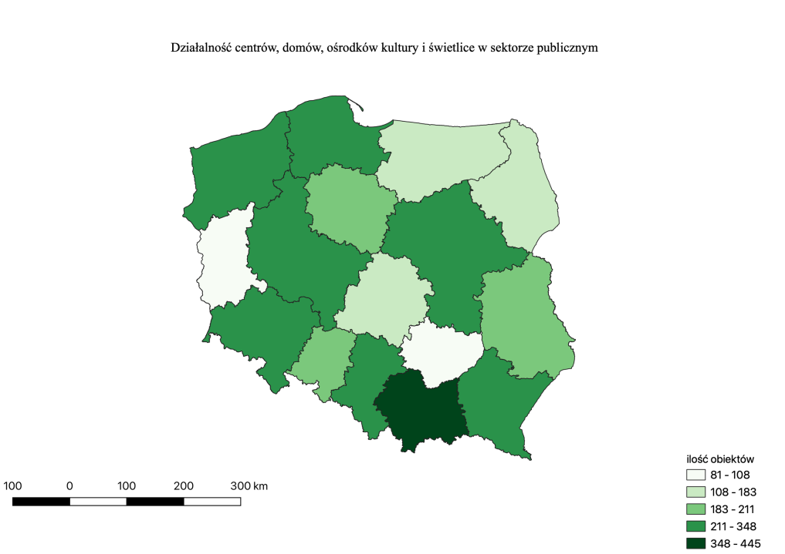

Nie sposób nie zauważyć, że problem dostępności i jakości opieki psychiatrycznej w Polsce powraca w dyskursie publicznym niczym bumerang i wciąż pozostaje nierozwiązany. Psychiatria dziecięca znajduje się w głębokim kryzysie i to już od dłuższego czasu – najlepiej odzwierciedla to raport NIK-u opublikowany w 2020 roku, a dotyczący kontroli z lat 2017-2019.
Jak czytamy w obszernym rozpoznaniu: „System lecznictwa psychiatrycznego dzieci i młodzieży nie zaspokaja w pełni potrzeb tej populacji pacjentów oraz nie zapewnia kompleksowej i powszechnie dostępnej psychiatrycznej opieki zdrowotnej”. Czym spowodowana jest tak dramatyczna sytuacja? Przede wszystkim permanentnym brakiem funduszy, które pokrywałyby koszty leczenia pacjentów i zapewniały im dostęp do profesjonalnej i szybkiej pomocy – wnioski z kontroli jednoznacznie pokazują, że w latach 2017-2019 kwoty na finansowanie świadczeń przekazywane szpitalom na podstawie umów zawartych z OW NFZ były niewystarczające.
Drugim zasadniczym problemem są braki kadrowe. Zgodnie ze standardem Światowej Organizacji Zdrowia na 100 tys. populacji małoletnich powinno przypadać 10 specjalistów psychiatrów, ale w Polsce ich liczba jest znacznie niższa i waha się w zależności od województwa (różnice w dostępie do opieki psychiatry między poszczególnymi województwami mogą być nawet czterokrotne!). Najmniej lekarzy psychiatrów przypadających na 10 tys. osób małoletnich było w województwie lubuskim (0,16), a najwięcej – w województwie łódzkim (0,79). Problemy kadrowe dotyczą nie tylko ilości lekarzy, ale również ich struktury wiekowej. Jak pokazują statystyki opracowane przez NIK, 32% specjalistów ma powyżej 55 lat i w najbliższych latach ten problem może się dodatkowo pogłębić, ponieważ tylko niewielka część przyznanych przez Ministra Zdrowia miejsc szkoleniowych dla rezydentów została obsadzona.
Brak specjalistów w dziedzinie psychiatrii nie jest ostatnim z kłopotów polskiej opieki zdrowotnej – brakuje również odpowiednich placówek. Z raportu możemy wyczytać między innymi, że „w okresie objętym kontrolą, w pięciu województwach nie funkcjonował żaden oddział psychiatryczny dzienny, a w województwie podlaskim brakowało całodobowego, stacjonarnego oddziału dla dzieci i młodzieży”. W 2019 roku na oddziale całodobowym psychiatrii dziecięcej na jedno łóżko przypadało nawet kilkanaście tysięcy potencjalnych pacjentów. Zbyt mała jest również ilość poradni zdrowia psychicznego, a czas oczekiwania na wizytę wynosi czasem nawet kilka miesięcy.
Powyższe informacje składają się na naprawdę przygnębiający obraz. W naszym kraju nie ma odpowiedniej profilaktyki zaburzeń psychicznych ani edukacji w tym kierunku, przez co problemy ze zdrowiem psychicznym nadal bywają stygmatyzowane bądź bagatelizowane. Równocześnie z roku na rok rośnie liczba prób samobójczych wśród dzieci i młodzieży – między rokiem 2013 a 2020 wzrosła praktycznie o 40%. W wyniku rażących zaniedbań dla wielu młodych osób na pomoc było już za późno, co zarazem smuci i frustruje. Nie sposób nie wspomnieć o jeszcze jednym aspekcie całego problemu: nieleczone zaburzenia u dzieci i młodzieży samoistnie nie znikają, ale ewoluują w często poważniejsze i uniemożliwiające normalne funkcjonowanie zaburzenia u dorosłych. W praktyce więc sprawne działanie psychiatrii dziecięcej oznacza zdrowsze społeczeństwo. W Polsce tymczasem psychiatria dziecięca znajduje się w stanie krytycznym i trudno powiedzieć, jak długo zdoła jeszcze wytrzymać, nim z hukiem runie.